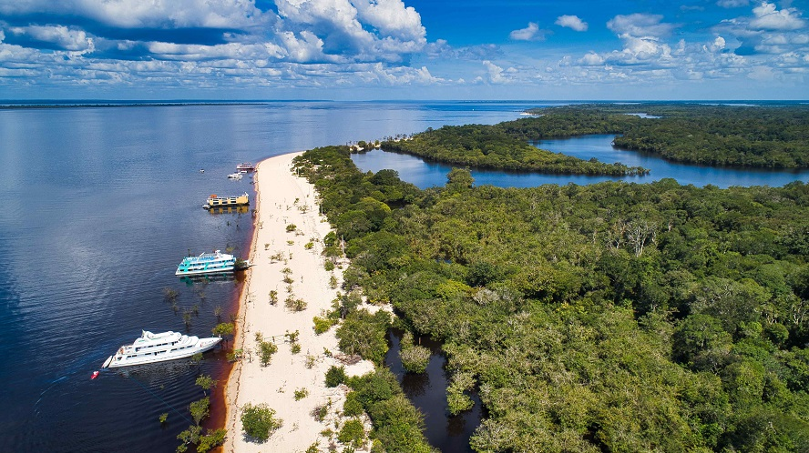

O Amazonas, estado localizado no norte do Brasil, é conhecido por abrigar a maior floresta tropical do mundo, a Amazônia. Além disso, a região possui uma rica diversidade natural e cultural. Aqui estão alguns dos principais pontos turísticos do Amazonas:
Bem-vindo ao Amazonas

Manaus: A capital do estado, Manaus, é um importante ponto de partida para explorar a Amazônia. A cidade em si abriga a famosa Ópera de Manaus, um edifício histórico e uma das atrações mais populares. O Mercado Municipal de Manaus é um lugar para conhecer a cultura local e comprar artesanato. Além disso, há passeios de barco disponíveis para explorar as áreas próximas, como o Encontro das Águas, onde os rios Negro e Solimões se encontram.
Rio Amazonas: O rio Amazonas é uma das maravilhas naturais do mundo. Os passeios de barco pelo rio são uma experiência incrível, oferecendo a oportunidade de observar a vida selvagem e a exuberante vegetação da floresta amazônica. Além disso, é possível visitar comunidades indígenas e aprender sobre sua cultura e modo de vida.

Parque Nacional de Anavilhanas: Localizado próximo a Manaus, o Parque Nacional de Anavilhanas é uma reserva de biodiversidade, conhecida por abrigar o maior arquipélago fluvial do mundo. Os visitantes podem explorar a região por meio de passeios de barco, trilhas e observação de pássaros, tendo a oportunidade de entrar em contato com a natureza intocada.
Parque Nacional do Jaú: Situado no coração da Amazônia, o Parque Nacional do Jaú é Patrimônio Mundial da UNESCO. É uma das maiores áreas protegidas de floresta tropical do mundo. Os turistas podem realizar caminhadas pela selva, pescar, observar animais selvagens e acampar sob as estrelas.